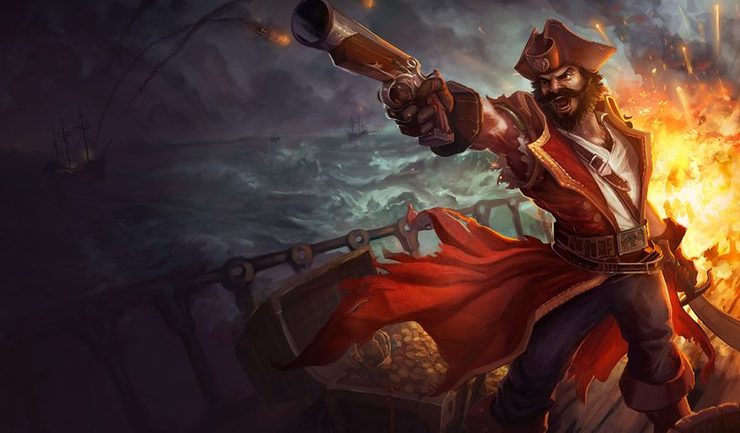

Laning phase will revolve around a few things. First, you should earn more gold by last-hitting using Parrrley. The gold advantage will help you get your power spike faster and help you upgrade your Cannon Barrage later on. You can also use Powder Keg to clear waves faster. The gold bonus also stacks up with The Keg if you last hit it suing Parrrley.
Try and stay out of enemy range when farming and harassing. Use your Parrrley to your advantage and harass using your Powder Keg if needed. One thing you should remember is that you should be constantly moving — this makes dodging enemy abilities easier. Once you hit level 6, just farm but try and keep an eye on the other lanes too so if you can help out using your ultimate you can get an assist, which is more gold for you.
You should start roaming in mid game and help out lanes that may be having trouble. Always try and participate in mini teamfights. When you are in a fight, drop a Powder Keg in the middle and use Parrrley to detonate it, dealing an AoE damage to all your enemies and slowing them. If someone is escaping, you can also use your ult to slow them down. Harass squishy targets using your keg and use your passive to drop their HP. If someone goes closer, get out of range, if you get CC-ed, use Remove Scurvy to run away.
Setting up your Kegs are quite tricky but a little bit of practice should do the trick. First, you should set up a Powder Keg near you so that your enemy won’t be able to reach it while its hit points get lower. The ticking rate at early levels is pretty slow and may take a little bit of practice to time, especially if you have a lane opponent. Once it is down to one hit point, you should drop a second one connecting to it and hit it with a parrrley to detonate both barrels consecutively. This will deal huge AOE damage from Parrrley, as well as the bonus damage from the barrels themselves, making wave clearing easier and chunking a part of your enemy’s HP. This will allow you to rack up Silver Serpents rather quickly, since the gold you get from Parrrley is also applicable when you detonate a keg.
Setting up your Kegs are quite tricky but a little bit of practice should do the trick. First, you should set up a Powder Keg near you so that your enemy won’t be able to reach it while its hit points get lower. The ticking rate at early levels is pretty slow and may take a little bit of practice to time, especially if you have a lane opponent. Once it is down to one hit point, you should drop a second one connecting to it and hit it with a parrrley to detonate both barrels consecutively. This will deal huge AOE damage from Parrrley, as well as the bonus damage from the barrels themselves, making wave clearing easier and chunking a part of your enemy’s HP. This will allow you to rack up Silver Serpents rather quickly, since the gold you get from Parrrley is also applicable when you detonate a keg.